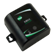

Data collection starts here. The sensor provides a current state for its measurement responsibility and makes it available to a gateway / aggregator via various physical interfaces including Analog, Digital, Serial, Ethernet or various wireless technologies (ZigBee, Wi-Fi, etc.)
This demo utilizes Digi’s XBee Light/Temperature/Humidity sensor to illustrate the end-to-end capabilities of sensor to collection to device and information management.
The Digi Device Integration Application Framework (DIA) enables the developer/integrator to add additional devices quickly and easily. Adding a new device is as easy as including the new device’s parameters in the DIA configuration file. DIA then creates a new channel for the device, which the Gateway Python user code simply calls for reading data.